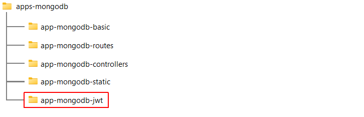
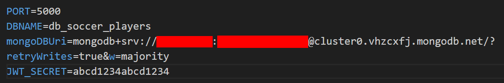
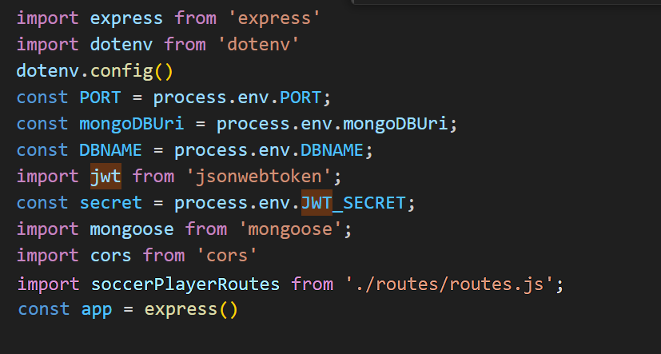
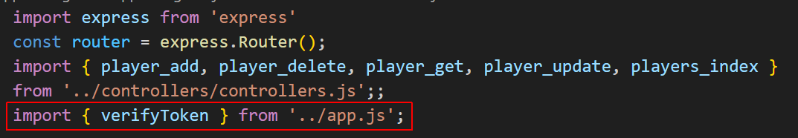
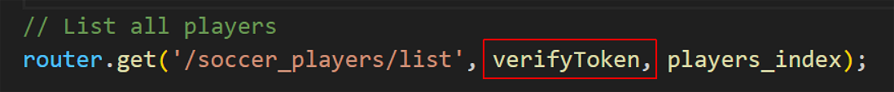
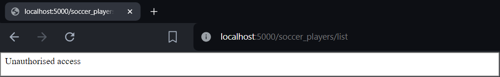
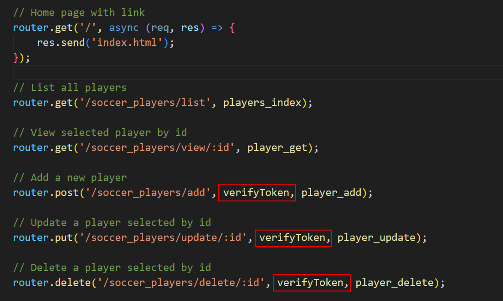
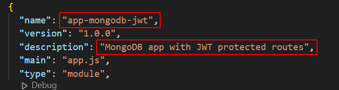

Learning Goals
At the end of this Tutorial, you will be able to:
- Securely store database connection strings and other environmental variables in an .env file.
- Serve static files such as images and stylesheets from Express with the express.static() middleware function.
Three options for protecting routes
- Basic authentication: Quickest and easiest solution that prompts users for a username and password. But these are sent to the server in plain text, which isn't secure for sensitive data. Should be used only for apps used internally within an organisation such as admin panels.
- Token-based authentication: Options such as JSON Web Tokens (JWT) store user information in encrypted format. These are sent with each request, eliminating the need to store passwords on the server.
- OAuth: For integrating apps with existing social media platforms or third-party authentication services. Users can log in without creating separate accounts on your app.
About JSON Web Tokens (JWTs)
A JWT (pronounced as "jot") is like a secure, encoded packet for containing user information. JWTs are compact, self-contained, and cryptographically signed.
With JWTs, you don't need to store passwords or maintain user sessions on the server. Note:
- Secure storage: JWTs should be stored securely on the client-side, typically in HttpOnly browser cookies.
- Token expiration: You need to set appropriate expiration times to prevent misuse.
- Refresh tokens: You also need to implement mechanisms for renewing expiring tokens.
Implementing route protection with JWTs
Here are the elements of a JWT-based authentication system in Express:
- User login: User provides credentials (username/password) to a login form.
- Authentication: Server verifies credentials and generates a signed JWT containing user data, such as ID and permitted role(s).
- Sending the JWT: Server sends the JWT back to the user as part of the response.
- Securing routes: Subsequent requests to protected routes include the JWT in the authorisation header.
- Validation: Server verifies the JWT's signature and extracts user information.
- Granting access: If valid, access is granted based on the user's data in the JWT.
Creating your folder structure
In a previous Tutorials, you created the folder structure shown below for four Express/MongoDB apps.
Copy the /app-mongodb-static folder and rename it to /app-mongodb-jwt.
Installing the JWT packages
You need to install two new Express packages for your app:
- Open a Command prompt or VS Code Terminal, and navigate to the folder that contains your app. For example:
cd apps-mongodb/app-mongodb-jwt/server - Install these two packages locally as follows:
npm i jsonwebtoken express-jwt
These will update the package.json file and the node_modules subfolder.
Adding the JWT key to your .env file
Add your JWT_SECRET key to the details already stored in your .env file:
Choose a strong, hard-to-guess string of characters.
Adding JWT middleware to your app.js file
Next, import the JWT_KEY into your app.js file and use it to build a middleware function named verifyToken that will manage access to protected routes.
- Add the new import statement as shown below: 
- Add the following middleware function after the other app.use() middleware functions already present:
You include the export keyword because you will import his function into your routes.js file.// Middleware function for verifying JWT export function verifyToken(req, res, next) { console.log("Verifying token..."); const authHeader = req.headers.authorization; // JWT not present in header if (!authHeader || !authHeader.startsWith('Bearer ')) { return res.status(401).send('Unauthorised access'); } const token = authHeader.split(' ')[1]; try { const decoded = jwt.verify(token, config.secret); req.user = decoded; // Add decoded user information to req object next(); } catch (err) { // JWT present in header but is invalid res.status(403).send('Invalid token'); } }
You now are finished updating your app.js file.
Adding the verifyToken function to routes.js
You will use the verifyToken() function from app.js to protect selected routes. Here are the steps:
- Open your routes.js file and add the new import statement below: 
- You can now add the verifyToken middleware as an argument to any route you wish to protect. As an example, add this function to the // List all players route: 
- Save your routes.js file and enter the following route in a web browser:
http://localhost:5000/soccer_players/list
- You should see the message below: 
- In your routes.js file, remove the verifyToken argument from the // List all players route. Add it instead to the routes for adding, updating and deleting players. See below: 
Updating your package.json file
As a final step, open your package.json file and update it for your new MongoDB app as shown below.
